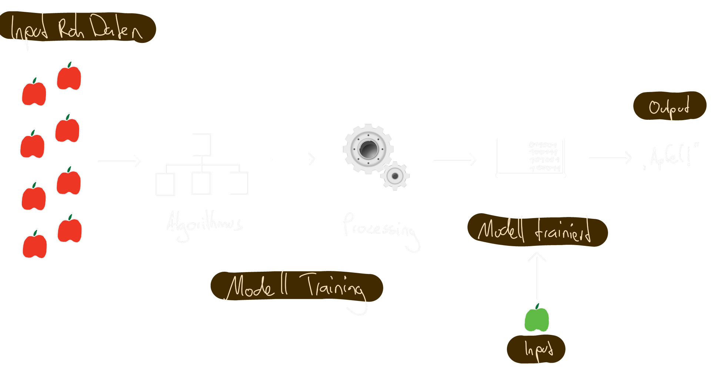
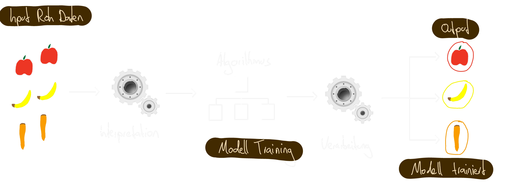
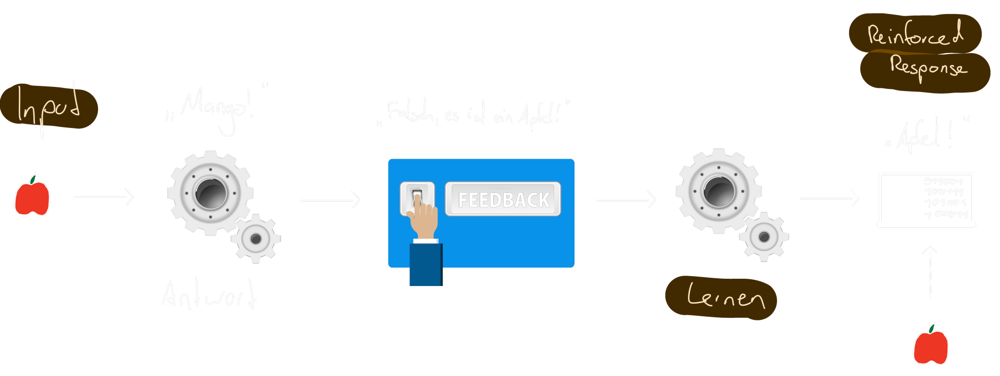

Artificial Intelligence
Methodik
Viele Fachbücher zur Literaturübersicht
Definition
Was ist Intelligenz?
"Ability to accomplish complex goals" - Max Tegmark
Schwache | narrow AI

Starke | general AI

Geschichte
Die Geburt von AI
Goldenen Jahre
1. AI Winter
Boom
2. AI Winter
Meilensteine
Gegenwart
Machine Learning

Lern Algorithmen
supervised learning
unsupervised learning
reinforcement learning
Modelle
Satz von Bayes
Bayessches Netz
Künstliche Neuronale Netze & Deep learning
Anwendungen
Raumfahrt
Finanzen
Produktion
Transport
Energie
Gesundheitswesen
Kommunikation
Justiz
Militär
Zukunft
Automatisierung und AI Systeme werden immer mehr zunehmen
Arbeit und Gehalt
"mehr Wohlstand durch Automatisierung, ohne Gehalt oder Sinn zu verlieren"
Schere zwischen arm und reich
- "alte" Berufe werden automatisiert
- in digitalen Unternehmen werden kaum noch Arbeiter benötigt
- wenige sehr erfolgreiche Personen
Berufswahl in der Zukunft
- Interaktion mit Menschen / Soziale Kompetenz
- Kreativität / schlaue Lösungen
- unvorhersagbare Umgebung
Einkommen und Sinn auch ohne Arbeit?
"Je weiter AI voranschreitet, desto mehr Menschen werden keine Arbeit haben"
Grundeinkommen durch den Gewinn der Maschinen
| Jobs | Alternativen |
|---|---|
| Soziales Netzwerk | Sport, Hobbies, Freunde Gruppen |
| Respekt, Selbstwertgefühl | Lernen, Familie |
| man macht einen Unterschied | Soziale Organisationen |
Gefahr durch eine AGI?
| Szenarien | Probleme |
|---|---|
| Von Menschen kontrollierte AGI | mächtigste Entität weltweit |
| nicht kontrollierbare AGI | Menschheit ist abhängig |
| viele unabhängige AGI Systeme | Machtausgleich |
AI Systeme müssen durch Menschen kontrollierbar bleiben!
Fazit
- Unterscheidung zwischen Narrow AI und AGI
- Thema AI gibt es schon seit 1950ern
- Machine Learning gibt je nach Input durch trainierte Netzwerke einen Output zurück
- AI hat sehr viele Anwendungsgebiete
- In der Zukunft wird Arbeit und Gehalt das Hauptproblem sein
Quellen
-
Julian Moeser, https://jaai.de/starke-ki-schwache-ki-was-kann-kuenstliche-intelligenz-261/, 27.08.2017
-
Gowthamy Vaseekaran, https://medium.com/@gowthamy/machine-learning-supervised-learning-vs-unsupervised-learning-f1658e12a780, 28.09.2018
-
Michael A. Nielsen, "Neural Networks and Deep Learning", Determination Press, 2015
-
Stuart Russell, "Artificial Intelligence - A modern Approach", Addison Wesley, 2016
-
Max Tegmark, "Life 3.0: Being Human in the Age of Artificial Intelligence", Penguin, 2018
-
Steven Finlay, "Artificial Intelligence and Machine Learning for Business: A No-Nonsense Guide to Data Driven Technologies", Relativistic 2017
Alle verwendeten Grafiken sind, falls nicht anders gekennzeichnet, unter der Pixabay Lizenz zur freien Benutzung, oder von mir selbst erstellt worden.